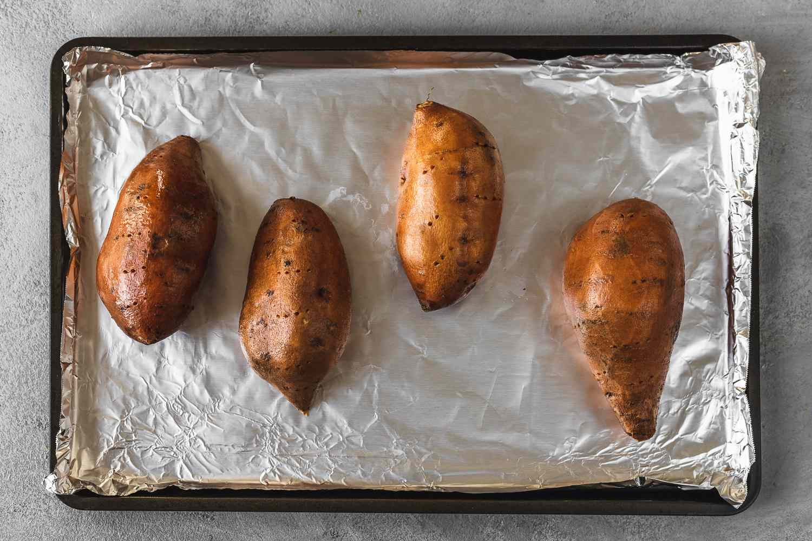

Baked Sweet Potato

Description
Baked sweet potato is a nutrient-dense comfort food that’s high in fiber and beta-carotene. Baking intensifies its natural sweetness, and with just a little olive oil and salt, it becomes a simple yet satisfying side or light meal on its own.
Ingredients
- Sweet potato
- Olive oil
- Salt
- Black pepper (optional)
Steps
- Preheat oven to 200°C (400°F).
- Pierce sweet potato and rub with olive oil.
- Bake ~45 minutes until tender.
- Sprinkle with salt and pepper.
Back to Main Page